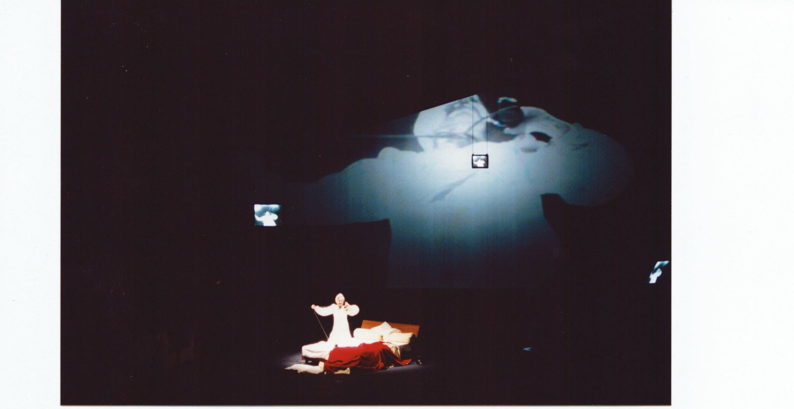
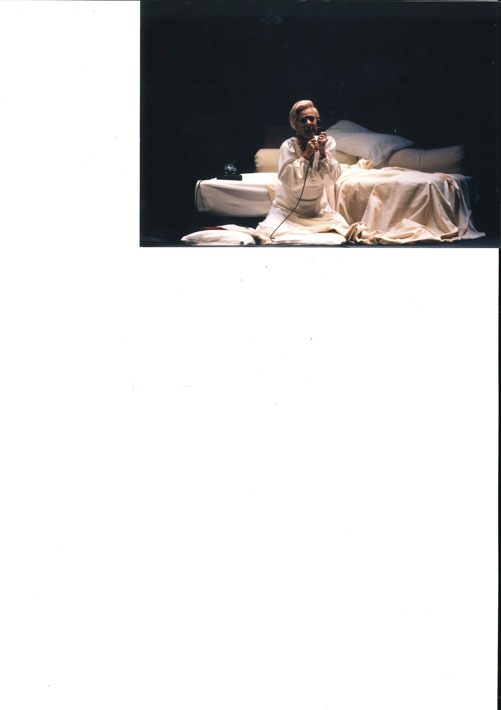
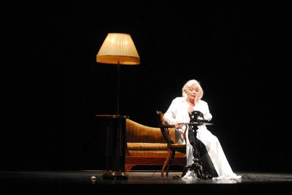
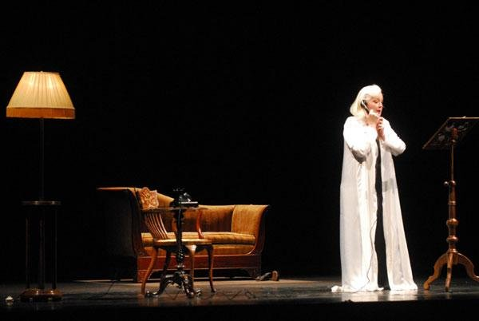
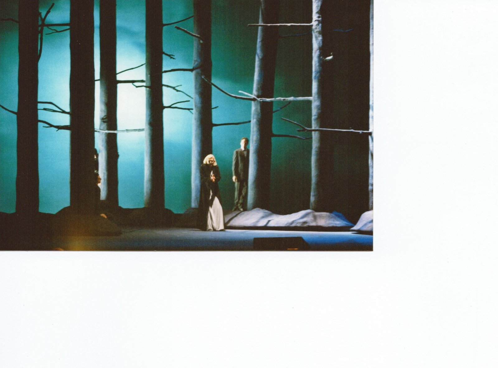
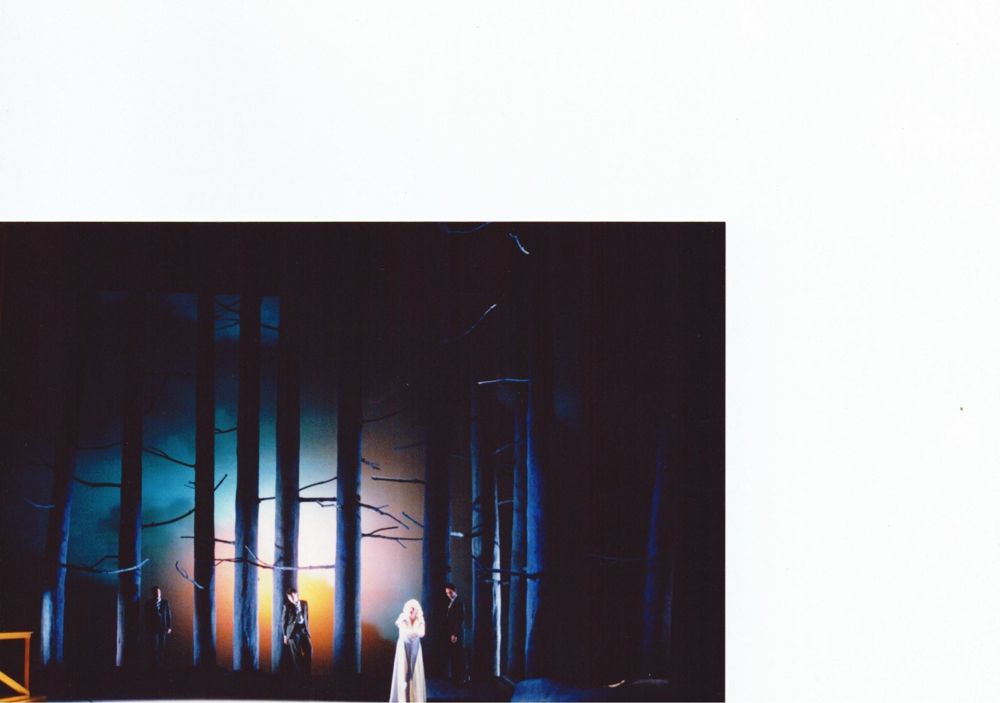
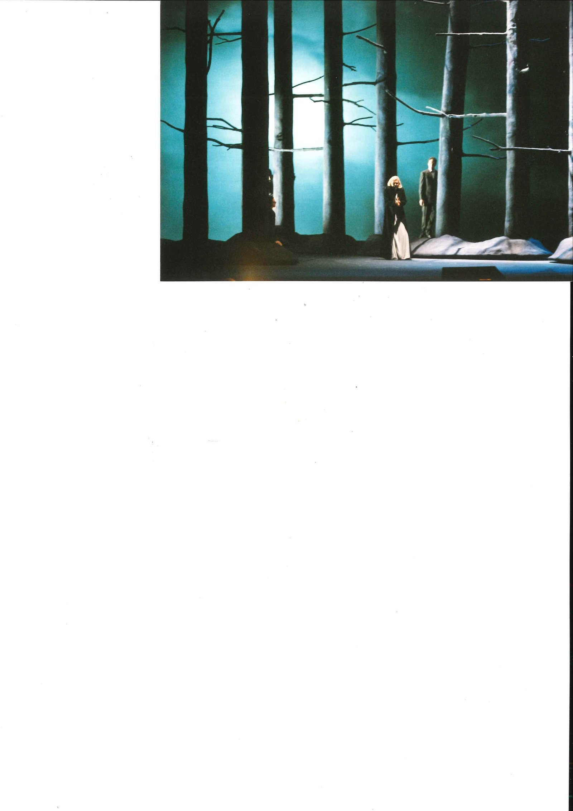

Una donna sola. Una voce. Un telefono che non risponde, un bosco che non finisce. Due monodrammi del Novecento accostati come la stessa solitudine dette in due lingue diverse.
A solitary woman. A voice. A telephone that does not answer, a forest that does not end. Two twentieth-century monodramas placed side by side as the same solitude spoken in two different languages.
Une femme seule. Une voix. Un téléphone qui ne répond pas, une forêt qui ne finit pas. Deux monodrames du XXe siècle accostés comme la même solitude dite en deux langues différentes.
Nel 2000 il Teatro Massimo di Palermo propone un dittico raro nel repertorio lirico: La Voix Humaine di Francis Poulenc (testo di Jean Cocteau, 1959) accostata a Erwartung di Arnold Schönberg (testo di Marie Pappenheim, 1909). Due monodrammi novecenteschi che condividono una stessa forma estrema — una sola interprete in scena, l'orchestra, e la voce come unico sismografo dell'anima. La regia è firmata da Giorgio Barberio Corsetti, le scene e i costumi sono di Cristian Taraborrelli in co-firma con Corsetti.
Nel febbraio 2001 la produzione approda al Teatro dell'Opera di Roma per sei rappresentazioni (13, 15, 17, 18, 20, 22 febbraio), con la direzione musicale di Vittorio Parisi e nei panni di Elle una delle voci più leggendarie della lirica italiana, Raina Kabaivanska. La Voix Humaine romana entra in dialogo, nella programmazione del Costanzi, con il balletto Requiem per Edith Stein di Carla Fracci con cui condivide la serata.
In 2000 the Teatro Massimo of Palermo proposes a rare diptych in the lyric repertoire: La Voix Humaine by Francis Poulenc (text by Jean Cocteau, 1959) paired with Erwartung by Arnold Schoenberg (text by Marie Pappenheim, 1909). Two twentieth-century monodramas sharing the same extreme form — a single interpreter on stage, the orchestra, and the voice as the only seismograph of the soul. Direction is signed by Giorgio Barberio Corsetti, sets and costumes by Cristian Taraborrelli co-signed with Corsetti.
In February 2001 the production reaches the Teatro dell'Opera di Roma for six performances (13, 15, 17, 18, 20, 22 February), with musical direction by Vittorio Parisi and in the role of Elle one of the most legendary voices of Italian opera, Raina Kabaivanska. The Roman Voix Humaine dialogues, in the Costanzi season, with the ballet Requiem per Edith Stein by Carla Fracci with which it shares the evening.
En 2000, le Teatro Massimo de Palerme propose un diptyque rare dans le répertoire lyrique : La Voix Humaine de Francis Poulenc (texte de Jean Cocteau, 1959) accostée à Erwartung d'Arnold Schönberg (texte de Marie Pappenheim, 1909). Deux monodrames du XXe siècle partageant la même forme extrême — une seule interprète sur scène, l'orchestre et la voix comme unique sismographe de l'âme. La mise en scène est signée par Giorgio Barberio Corsetti, scénographie et costumes par Cristian Taraborrelli cosignés avec Corsetti.
En février 2001, la production arrive à l'Opéra de Rome pour six représentations (13, 15, 17, 18, 20, 22 février), avec la direction musicale de Vittorio Parisi et dans le rôle d'Elle l'une des voix les plus légendaires de l'opéra italien, Raina Kabaivanska. La Voix Humaine romaine dialogue, dans la programmation du Costanzi, avec le ballet Requiem per Edith Stein de Carla Fracci avec lequel elle partage la soirée.
La Visione — Due solitudini, una firma
Corsetti e Taraborrelli concepiscono i due monodrammi come due interni mentali della stessa donna, separati da un'unica ellissi temporale. La Voix Humaine è uno spazio camerale notturno — un letto sospeso che diventa rifugio e abisso, un telefono nero come oggetto-feticcio, la luce che cade dall'alto come ascolto in attesa. Erwartung è il fuori della stessa testa: un bosco di tronchi azzurri retroilluminati, alberi che diventano grate psichiche, una luna che pulsa come tensione cardiaca.
A Roma nel 2001 la presenza in scena di Raina Kabaivanska trasforma il dispositivo in un atto di canto totale. Voce, corpo, gesto e sguardo della soprano bulgaro-italiana — Tosca leggendaria, Manon Lescaut, Adriana Lecouvreur del Novecento — portano l'intimità della voix monocorde di Cocteau a una dimensione tragica eccezionale. La camerality dello spazio Taraborrelli regge il dialogo con questa presenza vocale di rango assoluto senza mai sovrapposizione.
Il dispositivo è documentato anche in una ripresa successiva del 2006 in cui un'allestimento minimale — divano biedermeier, lampada a paralume, telefono nero, macchina da scrivere — trasforma il monodramma in un theatre de chambre intimistico, prossimo all'arte del ritratto fotografico.
Corsetti and Taraborrelli conceive the two monodramas as two mental interiors of the same woman, separated by a single temporal ellipsis. La Voix Humaine is a nocturnal chamber space — a suspended bed becoming both refuge and abyss, a black telephone as fetish-object, the light falling from above as listening-in-waiting. Erwartung is the outside of the same head: a forest of backlit blue trunks, trees that become psychic bars, a moon pulsating like cardiac tension.
In Rome in 2001 the stage presence of Raina Kabaivanska transforms the device into a total act of singing. Voice, body, gesture and gaze of the Bulgarian-Italian soprano — legendary Tosca, Manon Lescaut, Adriana Lecouvreur of the twentieth century — bring Cocteau's monocorde intimacy to an exceptional tragic dimension. The chamber-quality of Taraborrelli's space sustains the dialogue with this vocal presence of absolute rank without ever overlapping it.
The device is also documented in a later 2006 revival in which a minimal mise-en-scene — a Biedermeier sofa, a shaded lamp, a black telephone, a typewriter — transforms the monodrama into an intimate theatre de chambre, close to the art of photographic portraiture.
Corsetti et Taraborrelli conçoivent les deux monodrames comme deux intérieurs mentaux de la même femme, séparés par une seule ellipse temporelle. La Voix Humaine est un espace de chambre nocturne — un lit suspendu devenant refuge et abîme, un téléphone noir comme objet-fétiche, la lumière qui tombe d'en haut comme écoute en attente. Erwartung est le dehors de la même tête : une forêt de troncs bleus rétroéclairés, des arbres devenant grilles psychiques, une lune qui bat comme tension cardiaque.
À Rome en 2001, la présence en scène de Raina Kabaivanska transforme le dispositif en un acte de chant total. Voix, corps, geste et regard de la soprano bulgaro-italienne — Tosca légendaire, Manon Lescaut, Adriana Lecouvreur du XXe siècle — portent l'intimité du monocorde de Cocteau à une dimension tragique exceptionnelle. La cameralité de l'espace Taraborrelli soutient le dialogue avec cette présence vocale de rang absolu sans jamais s'y superposer.
Le dispositif est aussi documenté dans une reprise ultérieure de 2006 où une mise-en-scène minimale — un canapé Biedermeier, une lampe à abat-jour, un téléphone noir, une machine à écrire — transforme le monodrame en un intime théâtre de chambre, proche de l'art du portrait photographique.
Galleria — La Voix Humaine (Poulenc/Cocteau)





Galleria — Erwartung (Schönberg/Pappenheim)



I Collaboratori
Soprano — Elle (Roma 2001)
Raina Kabaivanska (Burgas, 1934)
Soprano bulgara naturalizzata italiana, fra le più grandi voci del secondo Novecento. Debutto alla Scala nel 1961, Tosca a fianco di Pavarotti, Manon Lescaut e Adriana Lecouvreur tra i suoi ruoli leggendari. Per La Voix Humaine alla Roma 2001 (sei rappresentazioni febbraio) porta in scena la solitudine di Elle al massimo della sua maturità interpretativa, con la sostituta Simona Baldolini il 17 febbraio. La sua presenza scenica e vocale è l'evento della stagione.
Direttore d'orchestra (Roma 2001)
Vittorio Parisi
Direttore d'orchestra italiano specializzato nel repertorio del Novecento, attivo in Italia e all'estero (Royal Opera Stockholm, Salzburg, Festival d'Avignon, La Fenice, Maggio Musicale). Conduce la Voix Humaine romana del febbraio 2001 nel doppio cartellone con il Requiem per Edith Stein di Carla Fracci. Lettura asciutta della partitura camerale di Poulenc, in sintonia con la regia minimalista di Corsetti.
Regia
Giorgio Barberio Corsetti (Roma, 1951)
Cofondatore della Gaia Scienza nel 1976, direttore del Festival d'Avignon (1996–99), del Romaeuropa Festival, della Biennale Teatro di Venezia (2010–12), del Teatro Argentina di Roma. La sua regia per il dittico Poulenc/Schönberg lavora sull'interno mentale femminile come spazio comune fra le due partiture. La collaborazione con Cristian Taraborrelli, iniziata alla Fenice nel 1999 con Maria di Rohan, attraversa questa Palermo/Roma 2000-2001 in cui Cristian co-firma scene e costumi.
Scene e costumi (co-firma con Corsetti)
Cristian Taraborrelli (Roma, 1970)
Per il dittico Palermo 2000 / Roma 2001 Cristian co-firma con Corsetti scene e costumi: lo spazio camerale notturno del letto sospeso per la Voix Humaine, il bosco di tronchi azzurri retroilluminati per Erwartung. Per Cristian è uno dei primi grandi titoli lirici di figura femminile assoluta, due anni dopo l'esordio di Maria di Rohan alla Fenice 1999.
Soprano — Elle (Roma 2001)
Raina Kabaivanska (Burgas, 1934)
Bulgarian-Italian soprano, among the greatest voices of the second half of the twentieth century. Scala debut 1961, Tosca alongside Pavarotti, Manon Lescaut and Adriana Lecouvreur among her legendary roles. For La Voix Humaine at Opera Rome 2001 (six February performances) she brings Elle's solitude on stage at the peak of her interpretive maturity, with substitute Simona Baldolini on 17 February. Her vocal and scenic presence is the event of the season.
Conductor (Roma 2001)
Vittorio Parisi
Italian conductor specialised in twentieth-century repertoire, active in Italy and abroad (Royal Opera Stockholm, Salzburg, Festival d'Avignon, La Fenice, Maggio Musicale). He conducts the Roman Voix Humaine of February 2001 in the double-bill with Carla Fracci's Requiem per Edith Stein. A dry reading of Poulenc's chamber score, in tune with Corsetti's minimalist direction.
Direction
Giorgio Barberio Corsetti (Rome, 1951)
Co-founder of Gaia Scienza in 1976, director of Festival d'Avignon (1996–99), Romaeuropa Festival, Venice Biennale Teatro (2010–12), Teatro Argentina Rome. His direction for the Poulenc/Schönberg diptych works on the female mental interior as common space between the two scores. The partnership with Cristian Taraborrelli, started at La Fenice 1999 with Maria di Rohan, runs through this Palermo/Roma 2000-2001 in which Cristian co-signs sets and costumes.
Sets and costumes (co-signed with Corsetti)
Cristian Taraborrelli (Rome, 1970)
For the Palermo 2000 / Rome 2001 diptych Cristian co-signs with Corsetti sets and costumes: the nocturnal chamber space of the suspended bed for La Voix Humaine, the forest of backlit blue trunks for Erwartung. For Cristian, one of his first major lyric titles of absolute female figure, two years after the debut of Maria di Rohan at La Fenice 1999.
Soprano — Elle (Rome 2001)
Raina Kabaivanska (Burgas, 1934)
Soprano bulgaro-italienne, parmi les plus grandes voix de la seconde moitié du XXe siècle. Début à la Scala en 1961, Tosca aux côtés de Pavarotti, Manon Lescaut et Adriana Lecouvreur parmi ses rôles légendaires. Pour La Voix Humaine à l'Opéra de Rome 2001 (six représentations en février), elle porte en scène la solitude d'Elle au sommet de sa maturité interprétative, avec la remplaccedil;ante Simona Baldolini le 17 février. Sa présence vocale et scénique est l'événement de la saison.
Chef d'orchestre (Rome 2001)
Vittorio Parisi
Chef d'orchestre italien spécialisé dans le répertoire du XXe siècle, actif en Italie et à l'étranger (Royal Opera Stockholm, Salzbourg, Festival d'Avignon, La Fenice, Maggio Musicale). Il dirige la Voix Humaine romaine de février 2001 dans le double cartellone avec le Requiem per Edith Stein de Carla Fracci.
Mise en scène
Giorgio Barberio Corsetti (Rome, 1951)
Cofondateur de Gaia Scienza en 1976, directeur du Festival d'Avignon (1996–99), du Romaeuropa Festival, de la Biennale Théâtre de Venise (2010–12), du Teatro Argentina de Rome. Sa mise en scène pour le diptyque Poulenc/Schönberg travaille sur l'intérieur mental féminin comme espace commun entre les deux partitions.
Scénographie et costumes (cosignés avec Corsetti)
Cristian Taraborrelli (Rome, 1970)
Pour le diptyque Palerme 2000 / Rome 2001, Cristian cosigne avec Corsetti scénographie et costumes : l'espace de chambre nocturne du lit suspendu pour la Voix Humaine, la forêt de troncs bleus rétroéclairés pour Erwartung. Pour Cristian, l'un de ses premiers grands titres lyriques de figure féminine absolue, deux ans après la création de Maria di Rohan à la Fenice 1999.
Riferimento d'archivio
La produzione romana del 2001 è documentata nell'archivio storico del Teatro dell'Opera di Roma:
The 2001 Rome production is documented in the historical archive of the Teatro dell'Opera di Roma:
La production romaine de 2001 est documentée dans les archives historiques de l'Opéra de Rome :
archiviostorico.operaroma.it — La Voix Humaine 2001 ↗
Tags